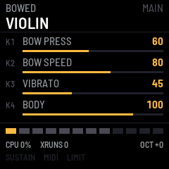
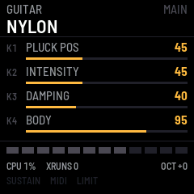

01 / Plucked
Bass & Guitar
Finger, pick, slap, fretless and upright bass; nylon, steel, clean, driven and jazz guitar. Waveguides with stiffness, pluck and pickup position, buzz.
Turn the M-VAVE FM-1 into a playable acoustic instrument laboratory. Pluck, bow and excite virtual strings — generated in real time, not replayed from recordings.
Download the firmware ↓ Manual Help measure it


Every note is calculated from a physical model: string vibration, excitation, damping, stiffness and body resonance. Presets store model parameters — never audio.
Finger, pick, slap, fretless and upright bass; nylon, steel, clean, driven and jazz guitar. Waveguides with stiffness, pluck and pickup position, buzz.
Violin, viola, cello, contrabass: a nonlinear stick-slip bow with pressure, speed, position and vibrato, through a modal body.
Harp, mandolin (a two-string course), banjo, koto and a hammered zither.
Plucked and bowed models, bodies, 12-voice allocator, MIDI, presets. Five native test suites and full-firmware simulator scenarios pass.
Builds with the pinned fm1-base and JieLi toolchain, passes its checks, released with a build attestation.
Measure CPU and xruns at 1 to 12 voices with the built-in benchmark, set the polyphony from that, then tune every instrument by ear.